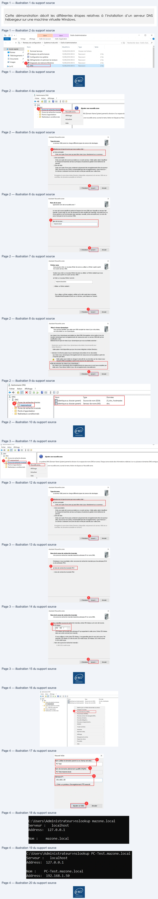

Transcription du document du Drive TSSR. La mise en forme est adaptée au Web ; les compléments IA du portail sont présentés séparément.
Services réseau en environnement Microsoft
Démonstration 02 du module 06
Cette démonstration décrit les différentes étapes relatives à l’installation d’un serveur DNS
hébergeur sur une machine virtuelle Windows.
•
Ouvrir la console MMC du service DNS.
Ouvrir la fenêtre Outils d’administration puis cliquer sur la ligne DNS (1).
•
Création d’une zone directe
Faire un clic droit sur la ligne Zones de recherche directes (1) puis sur le menu Nouvelle zone… (2).
Cocher le bouton radio Zone principale (3), puis cliquer sur le bouton Suivant (4). Spécifier le nom
de la zone (5), puis cliquer sur le bouton Suivant (6). Cliquer de nouveau sur le bouton Suivant (7).
Laisser cocher la case qui n’autorise pas les enregistrements dynamiques (cela sera abordé dans
une prochaine démonstration), cliquer directement sur le bouton Suivant (8). La zone est créée et
apparaît (9). Cette dernière dispose bien d’un SOA et d’un NS.
Page 1/4
© ENI – Tous droits réservés
IM
5
Gérer
Gérer
Outils d'administration
-
o
x
Accueil
Partage
Affichage
Outils de raccourci
Outils d'application
L?]
4 & > Panneau de configuration > Système et sécurité
> Outils d'administration
vO | Rechercher dans: Outils d'ad…
©
Nom
Modifié le
Type
Taille
a
sat Accès rapide
Terminal Services
15/09/2018 09:19
Dossier de fichiers
I Bureau
#
5
i
i
4 Analyseurde performances
15/09/2018 09:12
Raccourci
2 ko
Ÿ Téléchargements #
.
-
:
F2 Configuration du système
15/09/2018 09:12
Raccourci
2Ko
ec]
*
B Documents
BB. Défragmenteret optimiser les lecteurs
15/09/2018 09:12
Raccourci
2Ko
Æ Images
À
QE
Diagnostic de mémoire Windows
15/09/2018 09:13
Raccourci
2Ko
® Ce PC
15/09/2018 09:13
Raccourci
2Ko
Services réseau en environnement Microsoft
Page 2/4
© ENI – Tous droits réservés
À, Gestionnaire DNS
Fichier
Action
Affichage?
+ 2m
@
mn
i aa
À DNs
_
NS
22
ri} Ajouter une nouvelle zone
@ | Zones de recherche directes}
-
’
1 Points d'approbation
fichage
.
(Domain Name System) permet la division
d'un espace
de
HE Redirecteurs conditionnels
une nouvelle zone, ouvrez le menu Action et cliquez sur Nou
Actualiser
Aide
Assistant Nouvelle zone
x
Assistant Nouvelle zone
x
Type de zone
Le serveur DNS prend en charge différents types de zones et de stockages.
Nom dela zone
Quel est le nom de la nouvelle zone ?
Edséiectionnezle
type de zone que vous voulez
créer :
© Zone prindipele
Le nom de la zone spécifie la partiede l'espace de noms DNS pour laquelle ce serveur fait
.
ee
autorité. II peut s'agir du nom de domaine de votre société (par exemple, microsoft.com) ou
Se Lis copie dis zone Qi pale Eke nbs 8 JOUEeneCeSE
d'une partie du nom de domaine (par exemple, nouvelle_zone.microsoft.com). Le nom de
OZone secondaire
zone n'est pasle nom du serveur DNS.
Crée une copie
dela zone qui existe sur un autre serveur. Cette option aide à équilbrer
la charge de travail des serveurs principaux et autorise a gestion de la tolérance de
D
omdeta
zone :
pannes.
Ne
D Zonede stub
mazonelocal
|
Crée une copie d'une zone contenant uniquement des enregistrements Nom de serveur
{NS), Source de nom (SOA), et éventuelement des enregistrements « glue Host (A) ».
Un serveur contenant
une zone de stub ne fait pas autorité pour cette zone.
Enregistrer la zone dans Active Directory (disponible uniquement ile serveur DNS est un
contrôleur de domaine accessible en écriture)
D —
< Précédent |Suvent>| | Annuler
6
< Précédent
Annuler
Assistant Nouvelle zone
x
Assistant Nouvelle zone
x
Fichier zone
Mise à niveau dynamique
Vous pouvez créer un nouveau fichierde zone ou utiliser un fichier copié à partir
Vous pouvez spéciier que cette zone DNSaccepte les mises à jour sécurisées,
d'un autre serveur DNS.
non sécurisées ou non dynamiques.
Voulez-vous créer un nouveau fichierde zone ou utiser un fichier exstant que vous
Les mises à jourdynamiques permettentau cient DNS d'enregistrer et de mettre àjourde
avez copié à partir d'un autre serveur DNS ?
manière dynamique leurs enregistrements de ressources avec un serveur DNS dès qu'une
.
.
modification a leu.
© Créer un nouveau fichier nommé :
Sélectionnez le type de mises à jour dynamiques que vous souhaitez autoriser :
mazone.local.dns
|
Nautoriser que les mises à jour dynamiques sécurisées (recommandé pour
Active Directory)
RE TS
Cette option n'est disponible que pour les zones intégrées à Active Directory.
O Autoriser
à la foisles mises à jours dynamiques sécurisées et non sécurisées
Les mises à jour dynamiques d'enregistrementde ressources sont acceptéesà partir de
Pour utiser
ce fichier existant, vérifiez qu'il a été copié dans le dossier
n'importe quel cient.
%SystemRoot%\system32\dns sur ce serveur, puis cliquez sur Suivant.
A
Cette option peut mettre en danger la sécurté de vos données car lesmises
à jour
risquent d'être acceptées à partr
d'une
source
non approuvée
el
Les mises à jour dynamiques des enregistrements de ressources ne sont pas acceptées par
cette zone. Vous devez mettreà jour ces enregistrements manuellement.
7
8
< Précédent|Suvant>|| | annuier
< Précédent
Annuler
e
a
&
Gestionnaire DNS
Fichier
Action
Affichage
?
#9
4265 X86 Em
i aa
e
ä DNS
Nom
Type
Données
~ i ONS
Fidentique au dossier parent)
Source de nom (SOA)
[1], dns, hostmaster.
ones de
recherche directes
i
oa
Frdentique au dossier parent)
Serveur de noms (NS)
dns.
=) mazonelocal
LI Zones de recherche inversée
© Points d'approbation
1 Redirecteurs conditionnels
ent
Services réseau en environnement Microsoft
•
Création d’une zone de recherche inversée
Cliquer droit sur la ligne Zones de recherche inversée (1) puis sur le menu Nouvelle zone (2). Cocher
le bouton radio Zone principale (3), puis cliquer sur le bouton Suivant (4). Laisser cocher le bouton
radio Zone de recherche inversée IPv4 (5), puis cliquer sur le bouton Suivant (6). Spécifier l’adresse
réseau de la zone inverse (pour les besoins de la démonstration, le réseau est en 192.168.1.0/24) (7),
puis cliquer sur le bouton Suivant (8). Tout comme l’étape d’avant, ne pas changer le nom du fichier
de zone et ne pas autoriser les enregistrements dynamiques. La zone est désormais visible.
•
Page 3/4
© ENI – Tous droits réservés
Fichier
Action
Affichage?
-+ 2m
6 Em iaa
à, DNS
+ Sons
ri)
.
!
}
Ajouter une nouvelle zone
+
D Zones de recherche directes
.
D
mazoneloca
.
à
Œ Zones de recherche inversée]
3
Le système DNS (Domain Name System) permet la division d'un espacedenoms DNS en zones. Chaque zone stocke des informations relatives à un ou plusieurs domaines DNS contigus.
31 Points d'approbation
Ve
une nouvelle zone, ouvrez lemenu Action et cliquez sur Nouvelle zone.
D Redirecteurs conditionnels
Affichage
,
Actualiser
Aide
ul
Assistant Nouvelle zone
x
Assistant Nouvelle zone
x
‘Type de zone
Nom de la zone de recherche inversée
=
Le serveur DNS prend en charge différents types de zones
et de stockages.
Une zone de recherche inversée tradut les adresses IP en noms DNS.
Edséiectonnez le
type de zone que vous voulez créer :
Choisissez sivous souhaitez créer une zonede recherche inversée pour les adresses IPv4
ou les adresses IPV6.
© Zone principale
Crée unecopie d'une zone qui peut être mise à jour directement sur ce serveur.
5 # Zonede recherche inversée IPv4
OZone secondaire
‘Crée une copie de la zone qui existe sur un autre serveur. Cette option aide à équiibrer
) Zone de recherche inversée IPv6
la chargede travail des serveurs principauxetautorise la gestion de la tolérance de
pannes.
OZone de stub
Crée une copie d'une zone contenant uniquement des enregistrements Nom de serveur
(NS), Source de nom (SOA), et éventuellement
des enregistrements « glue Host (A) ».
Unserveur contenant une zone de stub nefait pas autorité pour cette zone.
Enregistrer la zone dans Active Directory (disponible uniquement si le serveur DNS est un
contrôleur de domaine accessible en écriture)
4
6
< Précédent
Annuler
< Précédent
Annuler
Assistant Nouvelle zone
x
Nom de la zone de recherche inversée
Une zone de recherche inversée traduit les adresses IP en noms DNS.
pour
identifier la zone de recherche inversée, entrez ID réseau ou le nom de la zone.
fe ID réseau :
192
168
1
TID réseau estla parte des adresses IP qui appartientà cette zone. Entrez ITD réseau
dans son ordre normal (non inversé).
Si vous utisez un zéro dans IID réseau, il va apparaître dans le nom de la zone. Par
‘exemple, IID réseau 10 crée la zone 10.in-addr arpa, lID réseau 10.0 crée la zone
0.10.in-addr.arpa.
© Nom de la zone de recherche inversée :
1.168.192.in-addr.arpa
8
< Précédent|| Suvant>|
Annuler
Services réseau en environnement Microsoft
•
Ajout d’enregistrement dans une zone
Se positionner dans la zone directe nouvellement créée. Dans le volet central, faire un clic droit,
puis cliquer sur le menu Nouvel hôte (1). Indiquer le nom NetBIOS de l’hôte (2), le nom FQDN
s’autocomplète (2), indiquer l’adresse IP associée à l’hôte (4) et si besoin laisser cocher la case
Créer un pointeur d’enregistrement PTR associé, cela permettra d’avoir directement
l’enregistrement de créé dans la zone inverse. Enfin, cliquer sur le bouton Ajouter un hôte (5).
•
Vérification avec nslookup
Pour vérifier les éléments précédemment configurés, ouvrir l’invite de commande puis indiquer nslookup suivi du nom de la zone directe.
Enfin indiquer nslookup suivi du nom FQDN de l’hôte.
Page 4/4
© ENI – Tous droits réservés
= ho or 2
Nouvel hôte
x
Le
EL
LES
om (utise le domaine parentsi ce champ est vide):
a
RC
atvie
Ga donsuaa
om de domaine pleinement qualifié (FQDN): (à
Radirecteur conditionnel
PC-Test.mazone.local.
a
ee
dresse IP
4
re
192.168.1.50
im x enregistrements
Z Créer un pointeur d'enregistrement PTR associé
Proprietes
5
:\Users\Administrateur>nslookup mazone.local
Serveur
:
localhost
Address:
127.0.0.1
om
:
mazone.local
C:\Users\Administrateur>nslookup PC-Test.mazone.local
Serveur
:
localhost
Address:
127.0.0.1
Nom
:
PC-Test.mazone.local
Address:
192.168.1.50
En
